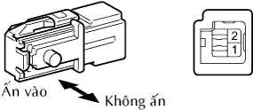
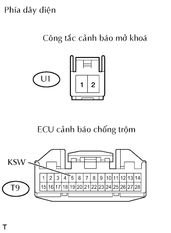
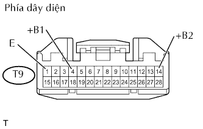

HỆ THỐNG ĐIỀU KHIỂN KHOÁ CỬA TỪ XA > Chỉ có chức năng điều khiển từ xa không hoạt động |
| 1.KIỂM TRA CÁC CHỨC NĂNG ĐIỀU KHIỂN KHOÁ CỬA TỪ XA |
|
| ||||
| NG | |
| 2.KIỂM TRA RẰNG ĐÈN LED CỦA ĐIỀU KHIỂN TỪ XA SÁNG |
Kiểm tra rằng đèn LED sáng 3 lần khi từng nút được ấn 3 lần.
|
| ||||
| NG | |
| 3.THAY THẾ PIN ĐIỀU KHIỂN TỪ XA |
Sau khi thay pin điều khiển từ xa (Xem trang Kích chuột vào đây), check that the doors can be locked and unlocked using the transmitter switches.
|
| ||||
| OK | ||
| ||
| 4.KIỂM TRA CHỨC NĂNG ĐIỀU KHIỂN KHOÁ CỬA TỪ XA (CHỨC NĂNG HOẠT ĐỘNG TIÊU CHUẨN) |
Giữ bộ điều khiển từ xa cách tay nắm bên ngoài cửa người lái xấp xỉ 1 m. Điều khiển từ xa phải song song với mặt đất và vuông góc với bên hông xe.
Aán và giữ hoặc nút LOCK hoặc UNLOCK khoá trên bộ điều khiển từ xa trong 1 giây và kiểm tra rằng cửa khoá và mở khoá tương ứng.
|
| ||||
| OK | ||
| ||
| 5.KIỂM TRA CẦU CHỈ (ECU-B, DCC, DOOR) |
Tháo các cầu chì ECU-B và DCC ra khỏi hộp rơle khoang động cơ.
Tháo cầu chì DOOR ra khỏi hộp rơle No.3.
Đo điện trở của các cầu chì.
|
| ||||
| OK | |
| 6.KIỂM TRA CỤM CÔNG TẮC CẢNH BÁO MỞ KHOÁ |
Tháo nút.
|  |
Đo điện trở của công tắc.
| Nối dụng cụ đo | Điều kiện | Điều kiện tiêu chuẩn |
| 1 - 2 | Không ấn | 10 kΩ trở lên |
| Ấn | Dưới 1 Ω |
|
| ||||
| OK | |
| 7.KIỂM TRA DÂY ĐIỆN (CÔNG TẮC CẢNH BÁO MỞ KHOÁ - ECU CẢNH BÁO CHỐNG TRỘM VÀ MÁT THÂN XE) |
|  |
Ngắt giắc nối U1 của công tắc.
Ngắt giắc nối T9 của ECU.
Đo điện trở của các giắc nối phía dây điện.
| Nối dụng cụ đo | Điều kiện tiêu chuẩn |
| U1-1 - T9-5 (KSW) | Dưới 1 Ω |
| U1-2 - Mát thân xe |
|
| ||||
| OK | |
| 8.ĐĂNG KÝ MÃ NHẬN DẠNG |
Kiểm tra rằng hệ thống có thể chuyển đến chế độ ghi đè và chế độ bổ sung, và một mã nhận dạng có thể được đăng ký.
|
| ||||
| NG | |
| 9.KIỂM TRA DÂY ĐIỆN (ECU CẢNH BÁO CHỐNG TRỘM -Ø RƠLE TÍCH HỢP) |
Ngắt giắc nối T9 của ECU.
Ngắt các giắc 2A và 2L của hộp đấu dây.
Đo điện trở của các giắc nối phía dây điện.
| Nối dụng cụ đo | Điều kiện tiêu chuẩn |
| T9-25 (L2) - 2A-4 (L1) | Dưới 1 Ω |
| T9-26 (UL3) - 2D-4 (UL1) |
|
| ||||
| OK | |
| 10.KIỂM TRA DÂY ĐIỆN (ECU CẢNH BÁO CHỐNG TRỘM - ẮC QUY VÀ MÁT THÂN XE) |
|  |
Ngắt giắc nối T9 của ECU.
Đo điện trở và điện áp của giắc nối phía dây điện.
| Nối dụng cụ đo | Điều kiện tiêu chuẩn |
| T9-1 (E) - Mát thân xe | Dưới 1 Ω |
| Nối dụng cụ đo | Điều kiện tiêu chuẩn |
| T9-4 (+B1) - Mát thân xe | 10 đến 14 V |
| T9-14 (+B2) - Mát thân xe |
|
| ||||
| OK | ||
| ||